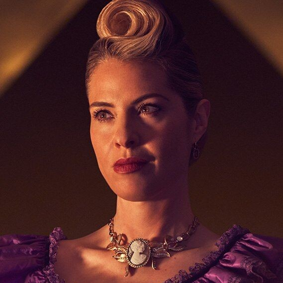
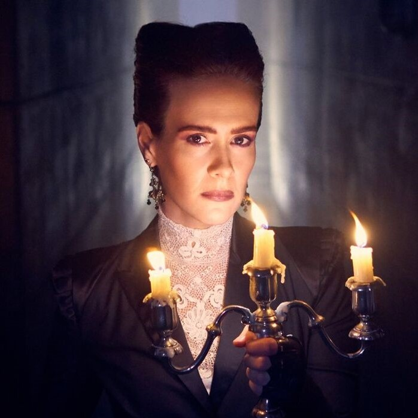
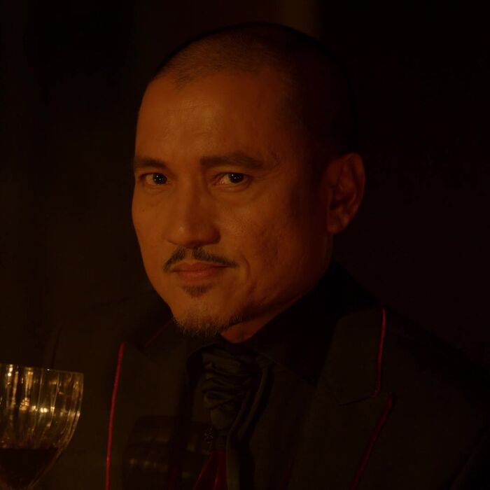
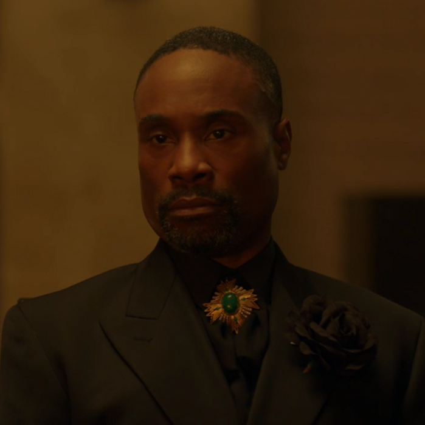
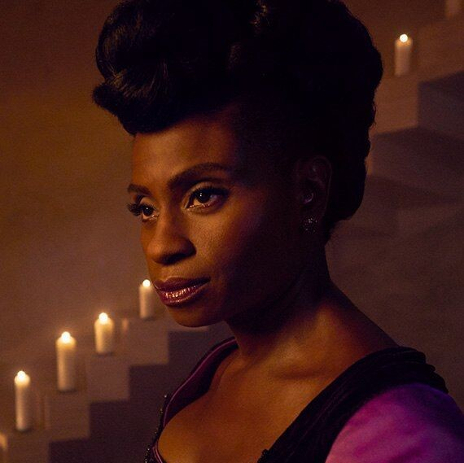

Name: Michael Langdon
Portrayed by: Cody Fern
Species: Anti-Christ
Personality type: INFJ 4w3
Powers and abilities:
Telekinesis
- the ability to move objects with one's mind
Pyrokinesis
- the ability to manipulate fire
Vitalum Vitalis
- the ability to heal injuries via transferring a portion of one's life force into the injured person
Transmutation
- also known as teleportation; the ability to instantly transport oneself to a certain location without physically moving
Concilium
- also known as mind control; bends the will of others into doing whatever the user wishes them to do
Descensum
- the ability to project one's soul into the afterlife
Divination
- the ability to gain knowledge and information through indirect magical means
Satanic occultism
- a skill that allows him to efficiently conduct Satanic rituals and practices
Illusion manipulation
- the ability to construct and project magical illusions
Conjuration
- the ability to conjure or summon objects and creatures from nothingness or from another location
Clairvoyance
- the ability to read the minds of others
Power negation
- the ability to negate and nullify the effects of another person's magic
Demonic shapeshifting
- the demonic ability of changing one's form to either one's true form or another likeness
Stricidium
- the ability to manipulate the weather through water molecules
Bypassing supernatural restrictions
- his demonic heritage allows him to go beyond the restraints of the supernatural
Enhanced strength
- his demonic physiology gives him inhumane physical strength
Superhuman intelligence
- his demonic neurophysiology allows him to process information and learn at a superhuman rate
Psychography
- the ability to write down words without consciously doing so; the words come from a subconscious, spiritual, or supernatural source
Character Analysis:
Michael Langdon is a powerful demonic entity proclaimed the Anti-Christ. Because of this, he possesses superior supernatural power and strength. Despite having raw magical powers greater than any witch or warlock, however, he lacks an extensive knowledge in magical spellcraft and rituals although he makes up for it with his knowledge in Satanic occultism. Michael also has an unsuppresible desire for death and destruction. As the personification of unimaginable evil, an uncontrollable thirst for carnage is in his blood and cannot be removed. This desire manifested as early as his innocent years when he was still a toddler as seen in the scene where he slits his nanny's throat and continued to grow as he matured. He's also a skilled manipulator. He talks in a sweet tone and a gentle manner, and even took on the guise of a male human with angelic charisma and beauty to help with his ventures in coercing people into doing what he wants.
Although his demonic nature is much more prominent, he still has some humanity in him. He is able to form familial bonds with Ben Harmon and his mother figure Miriam Mead. He is also seen to be conflicted during the moment he realizes that he's been murdering people and hurting those who are close to him. Even when he was at the peak of his infernal excellence, this humanity was anything but gone as he is seen to still have familial infatuation for Miriam Mead.
"The battle between good and evil never ends. The Devil isn't just going to give up. And in changing the past, a part of me will always wonder what it truly means for the future."
Name: Mallory
Portrayed by: Billy Lourd
Species: Mortal witch
Personality type: ISFJ 9w1
Powers and abilities:
Telekinesis
- the ability to move objects with one's mind
Pyrokinesis
- the ability to manipulate fire
Vitalum Vitalis
- the ability to heal injuries via transferring a portion of one's life force into the injured person
Transmutation
- also known as teleportation; the ability to instantly transport oneself to a certain location without physically moving
Concilium
- also known as mind control; bends the will of others into doing whatever the user wishes them to do
Descensum
- the ability to project one's soul into the afterlife
Divination
- the ability to gain knowledge and information through indirect magical means
Tempus Infinituum
- the rare ability to manipulate time and alter past events
Spellcraft
- the ability to cast magic spells
Character Analysis:
Mallory is an extremely powerful witch. There were even claims that she would surpass any witch or warlock including the present Supreme Cordelia Goode in terms of magical prowess. Before she was put under an identity spell, she was a kind and confident young witch. She excelled in her studies at the Academy and proceeded to grow her powers everyday. She had so much promise and potential that she managed to catch the attention of Witch Councilor and teacher Zoe Benson who relayed her progress to Cordelia Goode and manages to impress the Supreme as well. On top of that, she is also a brave and driven person. As soon as she heard of the threat of Michael Langdon, Mallory worked twice as hard to strengthen her magical abilities in order to quicken her rise to Supreme and protect her coven although she had her reservations and hesitations about replacing and indirectly killing Cordelia Goode which signifies how compassionate she is when it comes to her witch sisters. She's also an extremely congenial person as seen in her efforts to befriend and help Coco St. Pierre Vanderbilt ease into the coven. When Mallory was put under an identity spell, her demeanor became much more passive. She was less confident with herself and would always get ridiculed by her 'boss' Coco who was also affected by the identity spell, diminishing her self-esteem even more, just like what the spell was engineered to do in order to protect her and Coco once they get into an Outpost for the chosen survivors of the apocalypse.

"I'm basically just a walking nutrition label."
Name: Coco St. Pierre Vanderbilt
Portrayed by: Leslie Grossman
Species: Mortal witch
Personality type: ESFJ 3w2
Powers and abilities:
Danger detection
- the ability to detect danger and threats
Gluten detection
- the ability to detect any gluten content found in food
Calorie detection
- the ability to accurately count how many calories a piece of food has
Character Analysis:
Coco is a young witch known for her kind demeanor that compliments her materialistic nature. She's also renowned for the unusual manifestations of her ability to sense danger. These manifestations further cement her characterization as a materialistic person who grew up in a lavish lifestyle given the stereotypes we've established for rich people wherein they are portrayed to make a problem out of the most trivial things such as the matter of whether a piece of food has gluten or not. During her first days of admission into the Academy, Coco revelled in self-doubt and hesitations as she thought that she wasn't as talented as the other witches in the coven, showing that she still has her insecurities regardless of her background. She's also shown to long for a group that she can call her own, and translates this into her actions by doing everything in her power to help the coven combat the looming threat of the Anti-Christ, making her feel like she's making a significant contribution to a group that's accepted her as theirs. Coco was able to utilize her divination-esque abilities in a much more serious manner as well by using this notion as motiviation, along with the guidance and encouragement of Cordelia, Mallory, Queenie, and Zoe.

"Order on the outside does wonders to keep the chaos safely on the inside."
Name: Wilhemina Venable
Portrayed by: Sarah Paulson
Species: Human
Personality type: ISTJ 8w9
Character Analysis:
Miss Venable is the contemptible and tyrannical matriarch of Outpost 3. She has a brutal and sadistic demeanor as well as an intimidating presence. Out of all her bad characteristics, her lust for power is the most prominent one. Her obssession with having dominance and authority is so extreme that she even translated this into the way she dresses, choosing only to wear the color purple which is commonly associated with the elite. She tends to exploit any semblance of authority that is given to her as signified by her decision to adopt her own code of terror in Outpost 3. Despite her cold nature, Wilhemina still has her insecurities. She is ashamed of the fact that she has scoliosis and of how her condition deformed the appearance of her back. This insecurity caused her to shy away from human contact, specifically sexual intercourse. Wilhemina even translates this insecurity of hers into the code of terror she established for Outpost 3 by banning any sort of copulation between the residents, which is another showcase of how sadistic she is.
- her android physiology essentially makes her immortal and more resistant to damage. She is also provided with a concealed machine gun in her hand.
Character Analysis:
Miriam was a devout Satanist. She was firm in her religious beliefs and would regularly say grace before meals to a higher power she calls "His Malevolence". She's also quite proficient in Satanic occultim, being able to perform rituals and all that. Miriam was also seen to be quite brutal, her sadistic demeanor being able to match that of Venable's. She took glee in torturing the residents of the Outpost, one of her most vicious actions being the time when she manipulated a Geiger counter into displaying alarming results when used to scan a resident of the Outpost so she can torture the resident in peace under the guise of decontaminating him. She also has high regards for those who hold authority over her and would oblige to their commands and wishes without question for the most part. Miriam is also seen to have a motherly and nurturing side which she particularly displayed to Michael Langdon whom she treated and raised as if he was her own son. She also supported Michael in his steady rise to power as the Anti-Christ.

"I for one can't wait to see those ... squirm with a man in charge. Finally on top, where we belong."
Name: Ariel Augustus
Portrayed by: Jon Jon Briones
Species: Mortal witch
Personality type: ESTJ 8w9
Powers and abilities:
Telekinesis
- the ability to move objects with one's mind
Pyrokinesis
- the ability to manipulate fire
Scrying
- the ability to see messages, visions, and prophecies on a reflective surface
Transmutation
- also known as teleportation; the ability to instantly transport oneself to a certain location without physically moving
Stricidium
- the ability to manipulate the weather through water molecules
Character Analysis:
Ariel is the Grand Chancellor of the Hawthorne School for Exceptional Young Boys and a Level 3 warlock. He likes to project himself as a man of composure, strength, and authority although it is all just an act to hide his insecurities and envy. Ariel is particularly jealous of the witch coven at Miss Robichaux's higher position in the magical hierarchy as warlocks are far more inferior to them in terms of magical prowess as an effect of testosterone, which is only present in warlocks due to their male physiology. However, Ariel does not covet the stature that the witches have for his own benefit alone, but for the sake of all his warlock brothers so that they may take their rightful place in the hierarchy as he would put it. Despite his notion that he wants all of his warlock to brothers to ascend, he will not think twice of getting rid of any warlock that dares to undermine his vision. Ariel is also shown to be an extremely poor judge of character, especially when he is presented with something that feeds into his egotistical and ambitious desires. This is especially true when he wrongly proclaimed Michael Langdon as the Alpha that will help his warlock coven rise to the top.

"Now let's see if you've been practicing your spells, or just fiddling with your wand."
- the ability to see messages, visions, and prophecies on a reflective surface
Transmutation
- also known as teleportation; the ability to instantly transport oneself to a certain location without physically moving
Stricidium
- the ability to manipulate the weather through water molecules
Spellcraft
- the ability to cast magic spells
Character Analysis:
Behold is an instructor at the Hawthorne School and a member of the Council of Warlocks. He has a notable sarcastic personality. As a teacher, Behold simultaneously exhibits a strict demeanor and encouragement for his students. He's also portrayed as a critical person as signified by his refrainment from fully embellishing the idea that Michael Langdon is the prophesized Alpha without completely dismissing the possibility of the notion. Behold is also seen to be courageous as proven by his lack of fear upon entering the Murder House and immediately going on the offensive when faced by a ghost. He's also shown to be a devout warlock who took pride in his heritage yet still has enough sense to acknowledge the natural superiority of witches over his kind which is yet another proof of his critical mind. Despite lacking abilities in divination save scrying, Behold showcases that he can, more or less, assess situations correctly based on his own judgement or 'gut feeling' alone. This is especially true when he decided to entertain his and his colleague John Henry Moore's fears and reservations regarding Michael Langdon which he later confirmed by forming an alliance with the witches and conducting an investigation along with Madison Montgomery.

"Tell all your friends. The Voodoo Queen can fix any problem."
- the ability to cast magic spells of Voodoo origin
Voodoo potioncraft
- a skill that allows one to make substances that have magical properties and effects using Voodoo practices
Character Analysis:
Dinah served as the Voodoo Queen of New Orleans after the death of Marie Laveau and later went on to be an actress and a talk show host as a reward for her services to Michael Langdon. She likes to project an image of intelligence, dignity and poise as a means of hiding her true nature as an immoral, self-serving, and selfish person. She used her proficiency in Voodoo to solve people's problems in exchange for a handsome amount of money and later committed the more heinous act of helping Michael Langdon infiltrate Miss Robichaux's by using a Voodoo spell to break the aura shield that was protecting the Academy in exchange for a talk show and acting career. However, Dinah is not completely void of morality. This much more righteous side of her was showcased when she expressed disdain for Cordelia when the latter refused a deal from Papa Legba that could've potentially saved the world from the looming apocalypse and when she expressed disapproval for the idea of sacrificing innocent newborns in exchange for immortality.